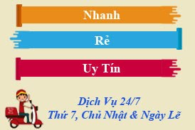

Bơm mực máy in Tân Bình nhanh chóng, chất lượng

Dịch vụ bơm mực máy in Tân Bình tận nơi 24/7
Máy in của bạn đang hết mực và bạn cần một đối tác bơm mực máy in Tân Bình nhanh chóng, chuyên nghiệp và quan trọng là chất lượng tốt. Tại sao lại không liên hệ với chúng tôi nhỉ? iNNO sẽ đáp ứng mọi yêu cầu của bạn với mức chi phí rẻ nhất thị trường.
Hotline: 0908327123 ĐT: 62711252
Lý do khách hàng nên chọn iNNO
iNNO bơm mực tận nơi nhanh, rẻ và uy tín
iNNO là Trung tâm mực in thuộc công ty TNHH Dịch vụ Tin học BTS được thành lập từ năm 2011. Đến nay iNNO đã có 8 năm kinh nghiệm hoạt động trên các lĩnh vực máy vi tính, máy photo, đặc biệt là lĩnh vực mực in và máy in.
Đội ngũ kỹ thuật viên bơm mực máy in quận Tân Bình có tay nghề cao, nhiệt tình, chu đáo và luôn luôn đúng giờ. Hơn nữa chất lượng mực in của iNNO luôn đảm bảo là hàng chính hãng nên mực ra đều và đẹp.
Chi phí nạp mực in tại iNNO có giá rẻ giúp khách hàng tiết kiệm được chi phí. Với dịch vụ bơm mực in tại nhà kể cả ngày thứ 7, chủ nhật và ngày lễ sẽ không làm lỡ việc của khách hàng.
Ngoài ra khi lựa chọn mực máy in Tân Bình của công ty chúng tôi, khách hàng luôn nhận được chế độ bảo hành tốt nhất.
Bơm mực máy in iNNO có những dịch vụ gì
Chúng tôi nhận kiểm tra, sửa chữa và cài đặt phần mềm cho tất cả các loại máy in, máy fax.
Nạp mực máy in laser cho dòng máy đen trắng và máy màu như HP, Canon, Samsung…
Ngoài ra chúng tôi còn có dịch vụ thay thế linh kiện cho các loại máy tin tận nơi với giá cam kết rẻ nhất thị trường Việt.
Với những dịch vụ đa dạng cùng lời cam kết mực in chất lượng, giá rẻ thì việc hợp tác với iNNO chúng tôi là một sự lựa chọn hoàn hảo phải vậy không nào? Hãy liên hệ với chúng tôi qua
hoặc
Hotline: 0908327123 ĐT: 62711252
? BẢNG GIÁ BƠM MỰC LASER TRẮNG ĐEN
| NẠP MỰC MÁY IN HP LASER và CANON LASER | |
| Nạp Mực In 17A: máy HP Laser jet pro M102, M102w, 104, MFP M130a, M130fw, M130nw, M132a, M132fn
Nạp Mực In 12A: máy HP Laser jet 1010 – 1012 – 1015 – 1018 – 1020 – 1022 – 1022N – 1022NW – 3015 – 3030 – 3050 – 3052 – 305 CANON 2900 – 3000 |
140.000 đ
90.000 đ |
| Nạp Mực In 13A: máy HP Laser jet 1300 -1150 | 90.000 đ |
| Nạp Mực In 15A: máy HP Laser jet 1000 – 1005 – 1200 series – 1220 series – 3300 series – 3320 MFP 3330 – MFP3380 Canon LBP 1210 (EP 25) | 90.000 đ |
| Nạp Mực In 24A: máy HP Laser jet 1150 – 1300 | 90.000 đ |
| Nạp Mực In 49A: máy HP Laser jet 1160 – 1320 – Máy in đa năng HP3390 CANON LBP 3300Series – 3390 – 3392 | 90.000 đ |
| Nạp Mực In 53A: máy HP Laser jet P2010 – 2014 – 2015 – 2015d – 2015m – P3000Seiten – LASERJET P2015 DN – P2015N – P2015X Canon : 3310 – 3370 (EP 315) | 90.000 đ |
| Nạp Mực In 92A: máy HP Laser jet 1100 – 3200 – 1100A – 1100A SE – 1100A Xi – 3200
Canon LBP 800 – 1120 (EP 22) |
90.000 đ |
| Nạp Mực In 05A: máy HP Laser jet P2030 – 2035 – 2035n – 2050 – 2055 – 2055d – P2055dn – 2055x – Canon LBP 6300 – 6650 – MF5840dn – MF5870dn – MF5880dn (EP 319) | 90.000 đ |
| Nạp Mực In 11A: máy HP Laser jet 2410 – 2420 – 2430 – 2420d – 2420n – 2420dn – 2430 – 2430n – 2430tn – 2430dtn | 150.000đ |
| Nạp Mực In 16A: máy in A3 HP 5200L – HP LaserJet 5200 / n / tn / dtn
Canon LBP 3500 (16A) |
240.000đ |
| Nạp Mực In 35A: máy HP P1005 – P1006 – P1505 – P1505n CANON LBP 3100 – 3108 – 3115 – 3050 | 90.000đ |
| Mực In 36A: máy HP Laser jet P1505 – P1505n – M1120 – M1120n – M1522nf – M1522n – Canon LBP 3250 (EP 313) Canon LBP 4550 – 4580DN – MF4570DN – 4550D – 4452 – 4450 – MF4420N – 4412 – 4410 – D520 EP 328 | 90.000đ |
| Nạp Mực In 85A: máy HP Laser jet 1102 – P1120W- 1212nf – M1132 | 90.000đ |
MỰC NẠP MÁY IN SAMSUNG – XEROX |
|
| Nạp Mực In SAMSUNG: ML1210 – 1610 – 1640 – 2010 – 4521 – ML 4521F | 120.000đ |
| ML1510 – 1520 – 1710 – 1740 – 1750 – SF560 – 565P – 750 – 750P – 2250 – 2251 – 2252 – 2150 – 4200 – 4520 – 4720 – 1600 | 120.000đ |
| SCX 4016 – 4216F – 4200 – 4200D3 – 4720D5 – ML2010D3 – ML2250D5 – DCX4520D5 – ML2010 – 2250 – SCX 4300 | 120.000đ |
| Nạp Mực In XEROX: 3115 – 3121 – 3116 – 3120 – 3130 – XEROX 3117, DELL | 120.000đ |
| Nạp Mực In XEROX: WORCENTER PE16SERIES, LEXMARK X215 | 120.000đ |
| Nạp Mực In XEROX: 203A – 204 | 160.000đ |
| MỰC NẠP MÁY IN PANASONIC | |
| Nạp Mực In PANASONIC: KX-FLB 801 – 802 – 803 – 811 – 812 – 813 – 851 – 852 – 853 – 882 Series KX – FL 402 Series KX – MB 262 – 772… |
150.000đ |
| Nạp Mực In PANASONIC: KX-FL 501 – 502 – 503 – 511 – 512 – 513 – 542 – 612 – 652… KX-FLM 551 – 552 – 553…, KX-FLB 751 – 752 – 753 – 755 – 756 – 758… | 150.000đ |
| MỰC NẠP MÁY IN BROTHER | |
| Nạp Mực In BROTHER: HL2030 – 2040 – 2070 – 2140 – 2150 – 2170 – 5240 – 5250 – 5280 Series… | 140.000đ |
| MFC 7210 – 7340 – 7420 – 7440 – 7820 – 7840 – 8460 – 8470 – 8660 – 8670 – 8860 – 8870 |
140.000đ |
| DCP 8060 – 8065 Series |
140.000đ |
| FAX 2820 – 2920 Series… | 140.000đ |
| BƠM MỰC MÁY IN LEXMARK | |
| Nạp Mực In LEXMARK: E120N – 220 – 230 – 238 – 300 – 352 – 240 – 240N – 240T – 250D – 250DN – 320 – X215… | 120.000đ |
| E321 – 322 – 323 – 330 – 332 – 342 – 350D – 352DN… |
120.000đ |
? BẢNG GIÁ BƠM MỰC LASER MÀU
Máy in màu laser hp cp1215 (đã có chíp): 300.000
Máy in màu laser hp cp1025 (đã có chíp): 300.000
Máy in màu laser hp cp1515 (đã có chíp): 300.000
Máy in màu laser canon 5050 (đã có chíp): 300.000
Máy in màu laser HP M252, M252n, M252nw (đã có chíp)…..500.000
Máy in màu laser HP M274, M277 (đã có chíp): 450.000
? BẢNG GIÁ BƠM MỰC IN PHUN, MỰC NƯỚC, MỰC DẦU
Nạp mực máy in phun HP, Canon, Epson.. Lắp hệ thống mực in liên tục giá rẻ, chất lượng cho các dòng như T50, T60, T30, G2000..
- Bộ 4 màu 550.000 luôn màu + chip + công lắp đặt.
- Bộ 6 màu 700.000 luôn màu + chip + công lắp đặt.
- Mực nước 60.000/1 màu bình 80ml.
- Mực dầu 120.000/ 1 màu bình 80ml
Nạp mực vào hộp mực theo máy, máy in phun hp, canon 40.000/ 1 màu. (máy còn nguyên hộp mực chính hãng, kỹ thuật tới tận nơi thao tác, bơm màu nào tính tiền màu đó)
Hotline: 0908327123 ĐT: 62711252
Cần nạp mực hoặc sửa máy in tận nơi? Mực In Trường Phát có mặt trong 30 phút tại TP.HCM — in test trước khi tính tiền, bảo hành 1 tháng.
0908.327.123 · 0819.007.394 (Zalo cả 2 số)